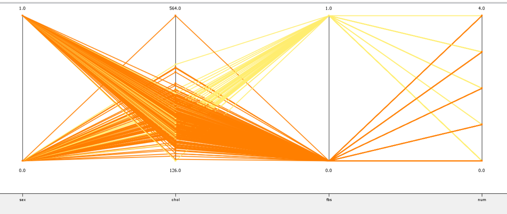

DATA RELATED INFORMATION:
Total 14 columns
Total 4 calsses
Total 303 rows
AGE->IT IS MORE COMMON IN MEN OVER THE AGE OF 45 AND WOMEN OVER THE AGE OF 55.
SEX->(1 = male; 0 = female)

CP->Cp is chest pain type
Value 1: typical angina
Value 2: atypical angina
Value 3: non-anginal pain
Value 4: asymptomatic
.jfif)
 TRESTBPS-> RESTING BLOOD PRESSURE (IN MM HG ON ADMISSION TO THE HOSPITAL.
CHOL-> SERUM CHOLESTORAL IN MG/DL.
FBS->FASTING BLOOD SUGAR > 120 mg/dl.(1=TRUE;2=FALSE).
TRESTBPS-> RESTING BLOOD PRESSURE (IN MM HG ON ADMISSION TO THE HOSPITAL.
CHOL-> SERUM CHOLESTORAL IN MG/DL.
FBS->FASTING BLOOD SUGAR > 120 mg/dl.(1=TRUE;2=FALSE).

RESTECG->RESTING ELECTROCARDIOGRAPHIC RESULT.
Value 0:Normal.
Value 1:Having St-t wave abnormality(T wave inversions and/or ST elevation or depression of > 0.05mV)
Value 2:Showing probable or definite left ventricular hypertrophy.
OLDPEAK-> ST DEPRESSION INDUCED BY EXERCISE RELATIVE TO REST.
SLOPE-> THE SLOPE OF THE PEAK EXERCISE ST SEGMENT.
Value 1: upslopin
Value 2: flat
Value 3: downsloping
THALACH-> MAXIMUM HEART RATE ACHIEVED
CA->NUMBER OF MAJOR VESSELS (0-3) COLORED BY FLOUROSOPY
THAL->3 = NORMAL; 6 = FIXED DEFECT; 7 = REVERSABLE DEFECT
STATISTICS:
MACHINE LEARNING METHODS AND RESULTS THROUGH KNİME:
RESULT: